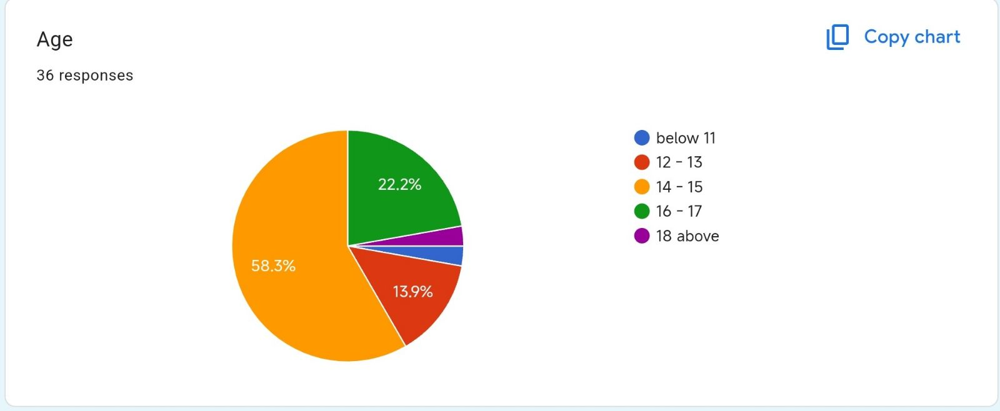
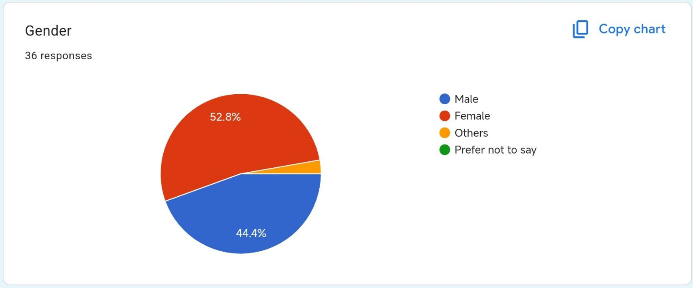
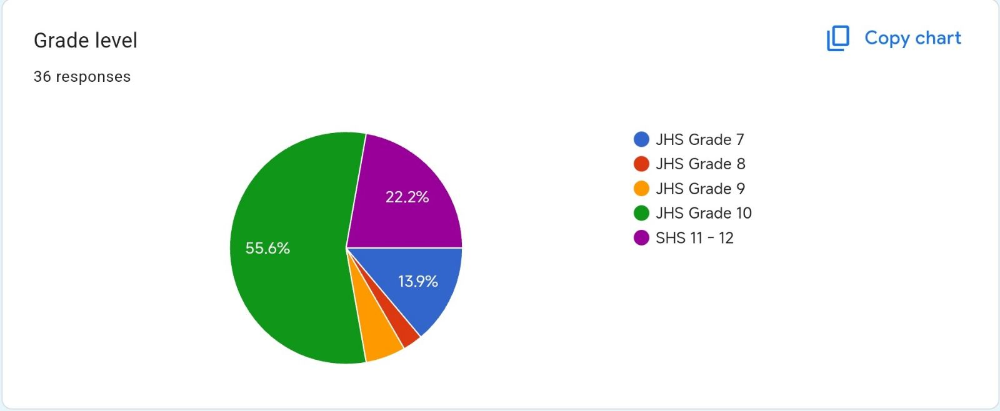
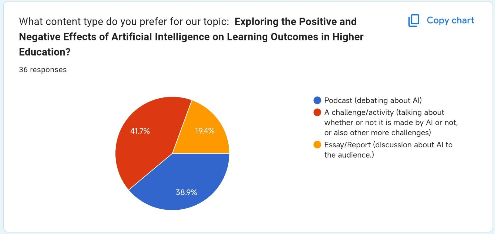

The final content focuses on the relevance of AI and its impacts. We plan to create an AI-themed challenge or activity that demonstrates the capabilities of Artificial Intelligence. In this activity, participants will guess whether certain outputs were created by AI or not. Additionally, we’ll include other interactive AI-related activities to showcase its potential. Viewer feedback on AI is mixed—some view it as beneficial, while others have concerns about its impact. However, most of our audience is interested in exploring AI’s uses and effects through engaging and entertaining interactive challenges.
Target Audience
The content chosen was conducted through a survey to our Target Audience.
Our target audience is high school students. They are intrigued about technology and how AI affects their life. Some are thrilled about its possibilities, while others are concerned, but the majority want to investigate its relevance in ways that are interesting and simple to understand
Survey Result




Beliefs and Opinions
The responses show a mix of beliefs and opinions on AI, specifically its role in education and creativity. Many see AI as a helpful tool for learning and improving efficiency, but there are concerns about students relying on it too much, leading to laziness and cheating. Some express worry about AI’s negative impact on artists, especially with AI-generated images and voices. Ethical concerns, like misinformation and the misuse of AI for things like deepfakes, are also raised. Overall, while AI is viewed as a key technological advancement with potential, there is a strong emphasis on using it responsibly to avoid over-dependence and harm to creativity and learning.
Attitudes on the topic
The responses in regards to their attitude to AI are mixed; and ambiguous towards it. They see it as a quick and useful tool in education and other creative works, but there is also a potential concern that people or themselves can be very compliant and reliant on using AI, as well as ethical related concerns like cheating/plagiarism, using AI art to replace indie artists and mainstream artists. In conclusion, as much as how useful, quick, and quite effective AI may be, there are still flaws regarding its personal use
Viewers Needs:
The needs of our viewers based on research about the content:
Social media is used mostly for everyone, it is used for many things to express ourselves to our friends, families, or all around the world. There are many contents on social media, including the challenge/activity trends. Challenge content is a creative community engagement where people make a random fun and competitive activity for their friends and families to participate. This content became a huge trend all over social media due to humor, creativity, and unexpected outcomes making it enjoyable to watch. People watch these types of content with curiosity and intriguing kinds of twists given with these contents.
The needs of our viewers based on our survey:
Most of our audience has chosen the second content type: an AI-related challenge or activity. In this content, we’ll demonstrate the capabilities of Artificial Intelligence by creating challenges where participants have to guess whether something was created by AI or not. Additionally, we’ll include other AI-focused activities to showcase its potential. Viewer feedback reflects mixed opinions on AI—some see it as beneficial, while others have concerns about its impact. However, most of our audience is interested in content that explores AI’s uses and effects in an engaging, entertaining format through interactive challenges and activities.
Platforms
We are using Facebook for our stream because it is a widely used platform that supports live streaming and interactive features like reactions, comments and polls. It is also popular among high school students making it an ideal choice to engage our target audience effectively.
Reference
:
Bajoria, P. (2025, January 3). 21 Most Popular Social Media Challenges - IIM SKILLS. iim skills. Retrieved January 7, 2025,
https://iimskills.com/21-most-popular-social-media-challenges/
Vasukam. (2023, August 15). The Psychology Behind Viral Social Media Challenges and Trends.
https://www.linkedin.com/pulse/psychology-behind-viral-social-media-challenges-trends-vasukam